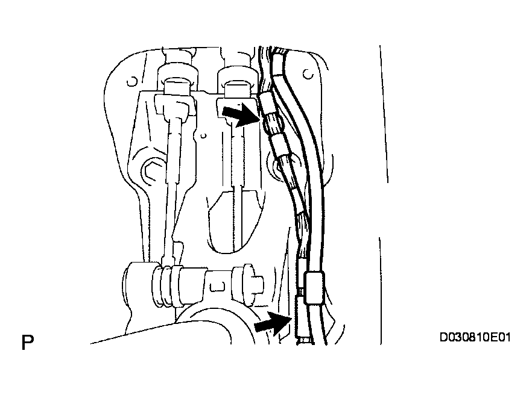
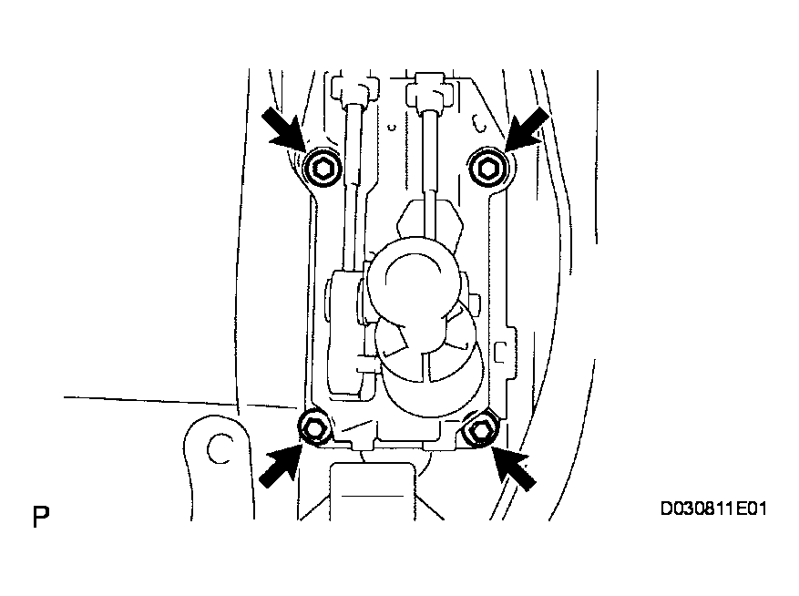
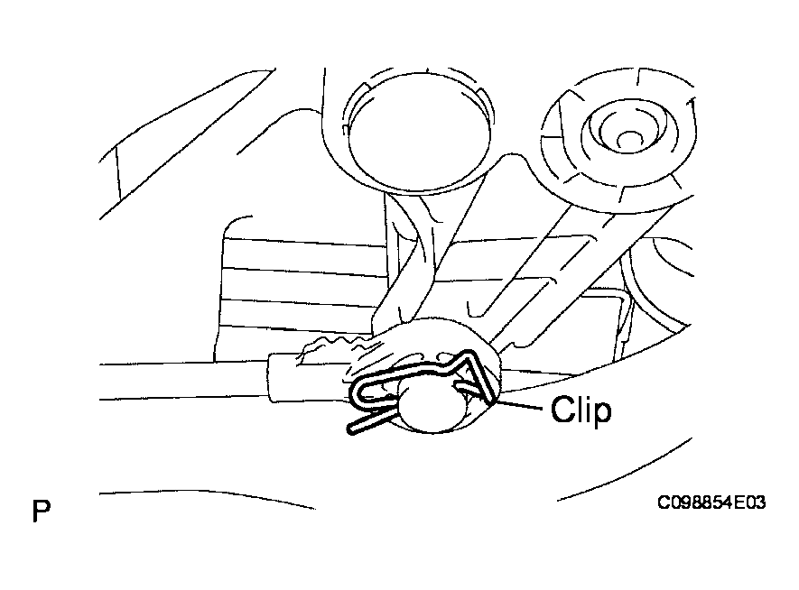
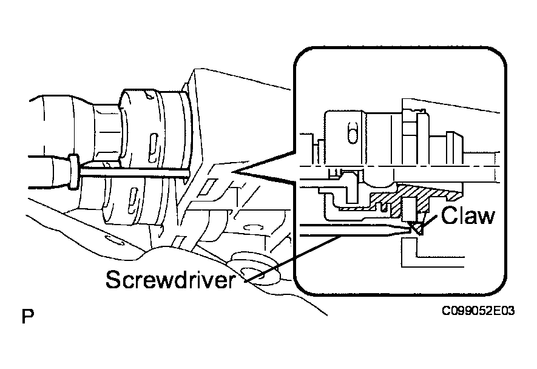
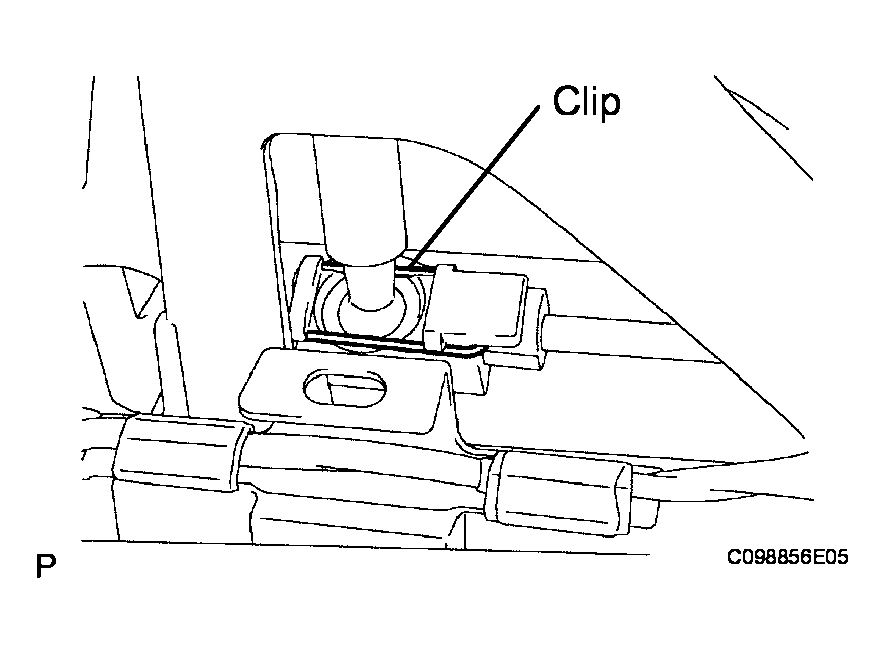
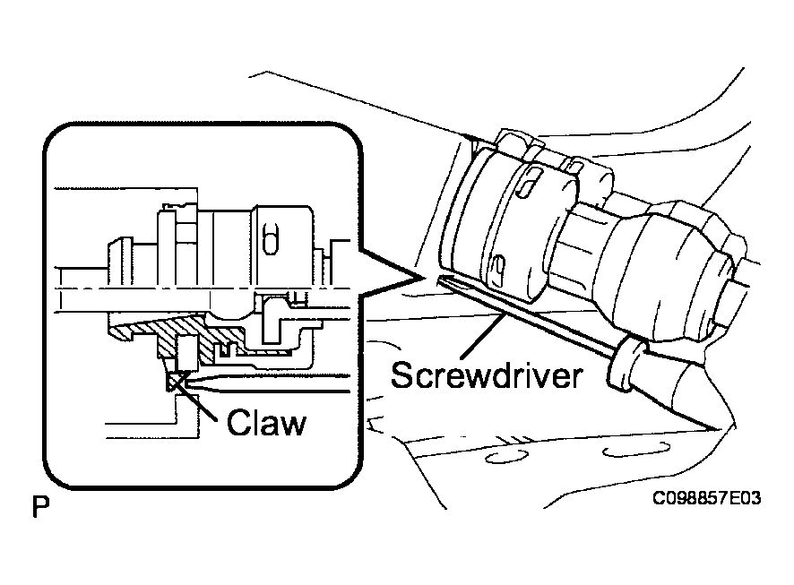

Floor Shift Lever Assembly: Removal
- REMOVE SHIFT LEVER KNOB SUB-ASSEMBLY
- Remove the shift lever knob (See
REMOVAL
).
- REMOVE REAR CONSOLE BOX ASSEMBLY
- Remove the rear console box (See
REMOVAL
).
- REMOVE FLOOR SHIFT LEVER ASSEMBLY
- Disconnect the wire harness.

Courtesy of © TOYOTA, LICENSE AGREEMENT TMS1002
- Remove the 4 bolts and disconnect the shift lever.

Courtesy of © TOYOTA, LICENSE AGREEMENT TMS1002
- Remove the clip, and disconnect the cable end of the transmission control select cable from the floor shift lever.

Courtesy of © TOYOTA, LICENSE AGREEMENT TMS1002
- Using a screwdriver, detach the claw.
- Disconnect the transmission control select cable from the shift lever retainer.

Courtesy of © TOYOTA, LICENSE AGREEMENT TMS1002
- Remove the clip, and disconnect the cable end of the transmission control shift cable from the floor shift lever.

Courtesy of © TOYOTA, LICENSE AGREEMENT TMS1002
- Using a screwdriver, detach the claw.
- Disconnect the transmission control shift cable from the shift lever retainer.

Courtesy of © TOYOTA, LICENSE AGREEMENT TMS1002